Microsoft Eco System과 통합된 강력한 클라우드 솔루션으로 최적의 생산성과 Insight 구현
Dynamics 365는 Microsoft 365, Power Platform 등과 유기적으로 연동되어 ERP 그 이상의 통합 디지털 업무 환경을 제공합니다.
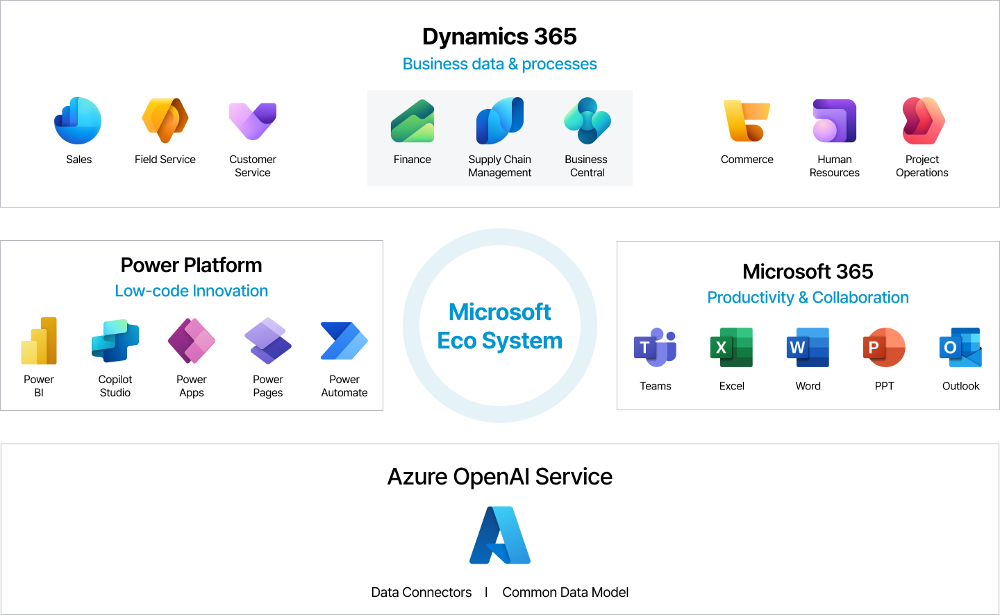
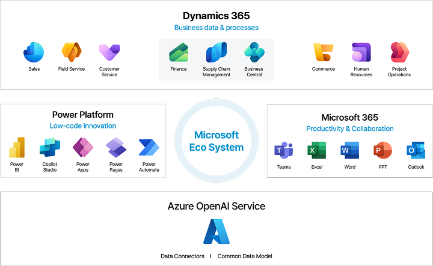
AI 기반 비즈니스 민첩성 향상
Dataverse에 통합된 데이터를 AI Copilot이 탑재된 Microsoft 생태계로 연결해 비즈니스 생산성을 혁신적으로 향상할 수 있습니다.
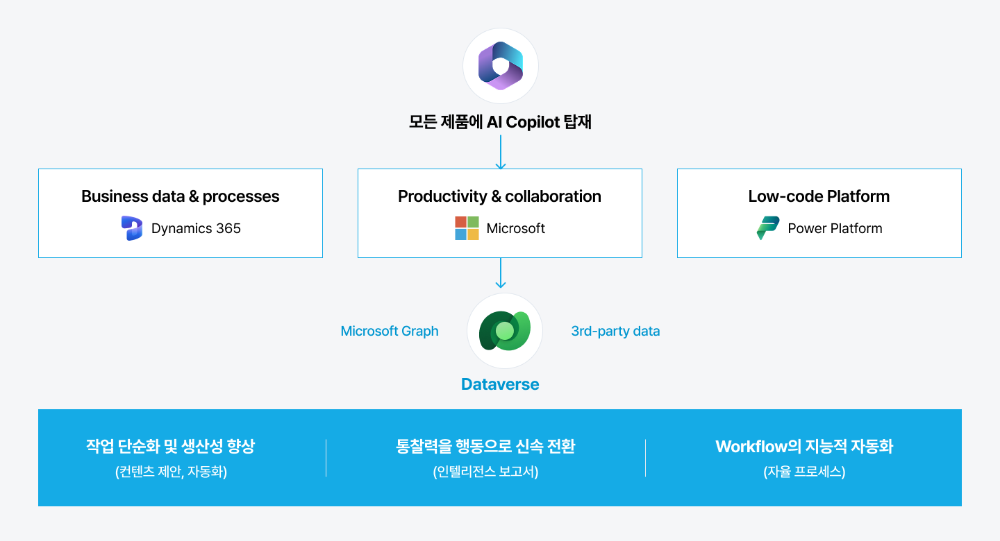
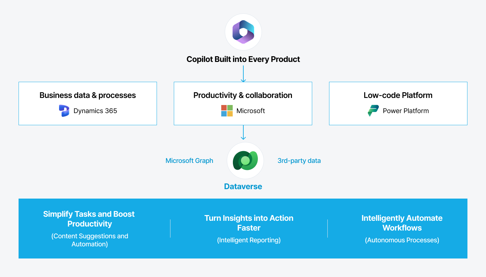
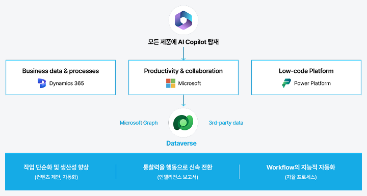
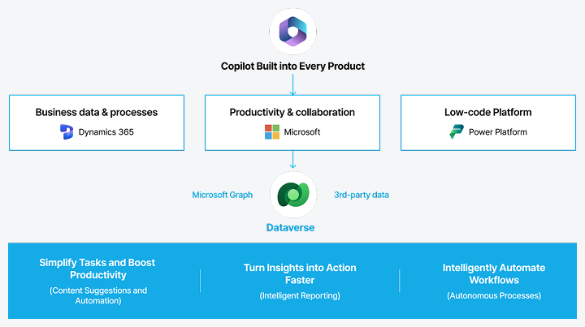
웅진, Microsoft Dynamics 365와 함께 실현하는 AX
웅진은 Microsoft의 공식 파트너로서 Microsoft Dynamics 365, Power Platform, Azure 등 Microsoft 생태계 기반의 통합 컨설팅 역량을 보유하고 있습니다. 전략 수립부터 시스템 구현, 운영지원까지 기업의 AI 전환을 함께하는 신뢰할 수 있는 파트너입니다.
비즈니스 민첩성 향상
SaaS 기반의 자동 업그레이드와 신기술의 빠른 적용
비즈니스 가시성 확보
Microsoft Eco System 내 통합된 실시간 비즈니스 관리 환경
AI 기반 업무 효율성 혁신
Microsoft Copilot으로 업무 자동화 및 실시간 인사이트 제공
안전한 AI 혁신
Microsoft Copilot으로 업무 자동화 및 실시간 인사이트 제공
최적의 Dynamics 365 ERP 도입
기업 고객의 성장 단계에 따라 가장 적합한 형태의 Dynamics 365을 만나보세요.
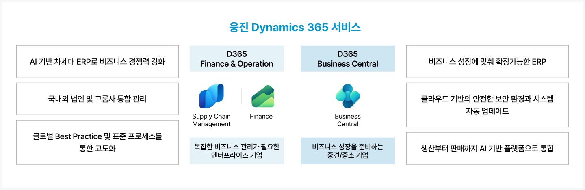
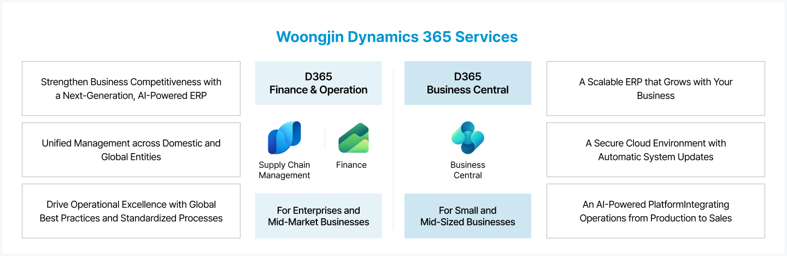
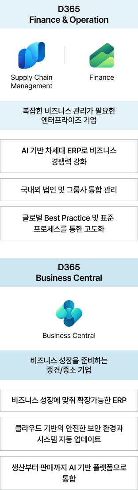
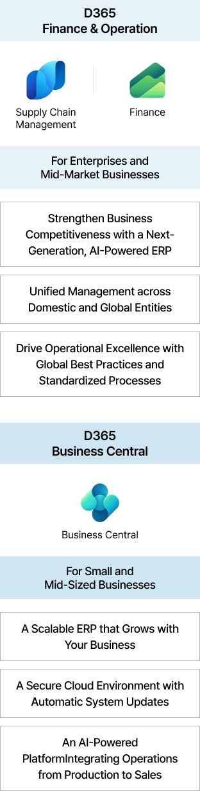
Why Woongjin 왜 웅진이어야 할까요?
안정적 시스템 구축 및 운영 노하우
다양한 프로젝트 구축 경험
200개 이상 국내/해외 다양한 산업 시스템 구축
17년 이상 프로젝트 관리 및 Risk 대응 노하우 보유
안정적인 운영 서비스 제공
150+ 고객사의 시스템 안정적으로 운영
고객의 장기적인 비즈니스 성장 지원
비즈니스 프로세스 혁신과 최적화
최적화된 전환 로드맵과 방법론 제시
혁신 대상 프로세스 분석
Dynamics 365 표준 기능 기반 프로세스 혁신
고객 맞춤형 솔루션 제공
다양한 산업 및 기업 규모별 핵심 비즈니스 프로세스에 Best-Practice 적용
컴플라이언스 대응과 현지화
컴플라이언스 요구사항 지속 지원
IFRS, K-GAAP, 내부회계관리 등 변화하는 국내
컴플라이언스 요구사항 반영
현지화 된 세무신고 기능 제공
부가세 관리 및 전자신고 기능 (VAT)
다양한 전자세금계산서 ASP와 연계된 발행 서비스
해외/제조업 운영을 위한 기능 제공
외환 중계 커넥터 제공 및 무역 관리 기능
제조원가 계산&마감 솔루션 제공
Dynamics 365 Copilot 에이전트형 비즈니스 애플리케이션
AI가 분석하고, 직접 판단하여 실행하는 새로운 ERP를 경험해보세요. Dynamics 365 Copilot 에이전트는 재무, 조달, 판매, 고객 서비스 등 핵심 업무 프로세스에 내장되어 사용자의 업무를 지원하고 자동화하여 더욱 빠르고 스마트한 비즈니스 운영을 실현합니다.
Finance
계정 조정 에이전트
원장 간 거래를 자율적으로 대조 및 정리하여 재무팀이 더 적은 수동 작업으로 결산할 수 있도록 지원합니다.
Finance & Operations – AI Agent를 통해 더 쉽고 빨라진 재무 데이터 분석 및 활용
Microsoft 365 Copilot Finance Agent는 Dynamics 365의 재무 데이터를 기반으로 핵심 업무 정보를 자동으로 분석하고 필요한 시점에 제공합니다.
사용자는 Outlook이나 Copilot Chat에서 자연어로 질문하고 즉시 답변을 받을 수 있으며, 중요한 재무 이슈와 비즈니스 변화를 빠르게 파악할 수 있습니다.
Business Central – AI Agent를 통해 누구나 쉽고 빠르게 활용 가능한 ERP 환경 구현
Business Central Copilot은 사용자의 질문에 자연어로 응답하고 필요한 데이터와 업무 화면을 빠르게 찾아줍니다.
복잡한 메뉴 탐색 없이 원하는 정보를 즉시 확인할 수 있으며, 업무 방법과 프로세스에 대한 가이드까지 제공하여 누구나 쉽고 빠르게 ERP를 활용할 수 있도록 지원합니다.
Dynamics 365 Finance & Operations는 복잡한 글로벌 비즈니스 환경을 위한 엔터프라이즈급 ERP 플랫폼입니다. 전사 핵심 업무를 통합하고 다중 법인·다국가·다통화 환경을 지원하며, AI와 실시간 데이터를 기반으로 글로벌 기업의 운영과 의사결정을 혁신합니다.
글로벌 엔터프라이즈 운영
End-to-End 비즈니스 통합
복잡한 비즈니스 프로세스 지원
AI기반 지능형 운영
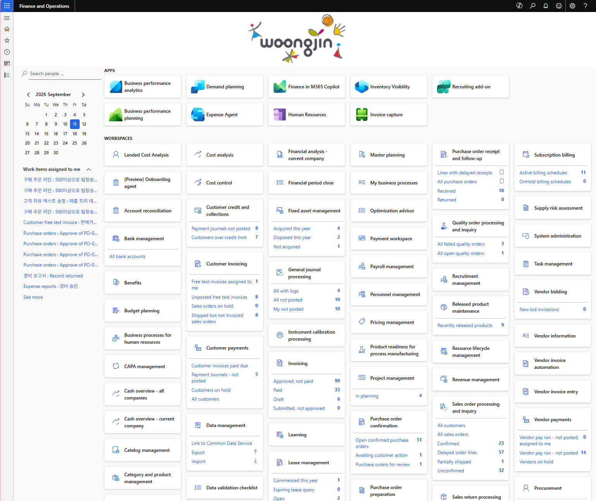
비즈니스 프로세스에 필요한 모듈만 구성할 수 있는 유연한 확장성
MSA (Micro Service Architecture) 기반의 비즈니스 범주별 기능 모듈을 자유롭게 조합하여 도입 가능합니다.
공급망
Supply Chain Management
Commerce
고객
Sales
Customer Sercice
Contact Center
서비스
Field Service
Customer Insight
재무
Finance
Project Operations
Human Resource
ISV(3rd party)
GW Addin Teams
e-Account Addin Teams
HR (+BPO)
VAT
관리회계
** MSA(Micro Service Architecture): 하나의 애플리케이션을 여러 서비스로 작게 나누고 서비스들끼리 통신하는 구조
Finance Management 특장점
변화하는 비즈니스 요구에 재무모델을 재구성하고 생성형 AI 및 자동화를 활용한 재무상태에 대한 가시성과 수익을 극대화 할 수 있습니다.
SAP는 클라우드 중심, 구독형 라이선스 정책으로 빠르게 전환하고 있습니다. 동시에 국내 주요 ERP의 EOS(End of Support) 시점도 다가오고 있어, 단순 대체가 아니라 AI·자동화 혁신을 반영한 전환을 검토하는 것이 필요합니다. 웅진은 실제 고객사의 EOS 대응 및 전환 프로젝트 경험을 기반으로, 맞춤형 로드맵을 제안합니다.